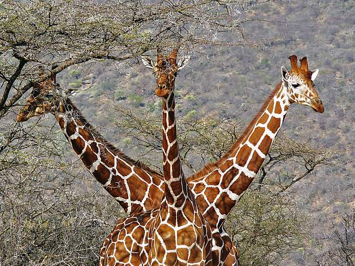

Robert Muthuri
If I were to be an animal, I'd choose to be a Giraffe for its sense of vision, gait and compusure.

My current projects
- Watamu Resort: This is a website for a lovely resort along the Kenyan coastline in the south-coast area of Mombasa county.
- Media Query: This is a web page I used to practice rendering on different devices e.g. mobible versus desktop.
- Cats and Dogs: This is a web page I used to practice how to style using the div container tag.
- My first website: This was my very first website: I learnt how to add images, basic styling, licensing, a README page etc.
About Me
I consider myself a life-long learner whose motiving comes from trying to understand how we can apply technology to solve the problems of regulatory compliance. That said, I have a background in technology and innovation with a particular focus on the regulation of startups.
My hope is that by joining the Moringa programme, I can gain enough expertise to inform the said focus.